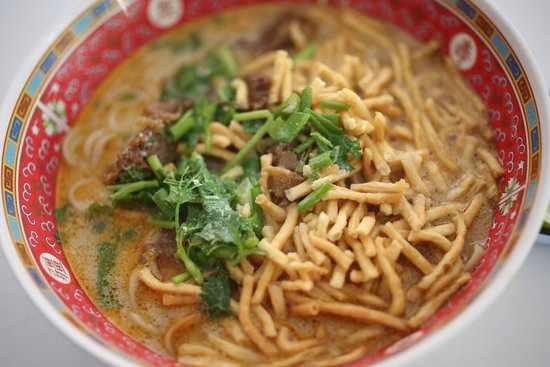

Khaoi Soi

Khao Soi Recipe
Ready to take a slice of Chiang Mai home with you? Enjoy this delicious khaoi soi recipe on us.
Ingredients
- Curry Paste
- Noodle Soup
- Cripy Fried Egg noodles
- Coconut Milk
- Soy Sauce
- Sugar
- Cilantro or Green Onions
- Choice of Chicken, Beef, or Pork
- Lime Wedges
- Chopped shallots
- Sour pickled mustards greens
- Fried chilli flakes
Steps
- In a pot, add a little bit of veggie oil and saute the curry paste over medium high heat for about 30 seconds.
- Add 1/2 cup of coconut milk and cook, stir constantly, until the coconut milk dries up and the paste becomes thick.
- Add the chicken and coat completely in the curry paste. Add remaining coconut milk, water, and seasonings.
- Bring to a boil and then turn down to a simmer and let the chicken braise for about 25 minutes until tender.
- Blanch egg noodles for about 1 minute or until thoroughly cooked.
- Drain and transfer into a serving bowl.
- Pour soup over noodles. Place chicken on top and crunchy, fried noodles over.
- Serve with lime wedge, shallots, pickled mustard greens, and fried chillies to taste.